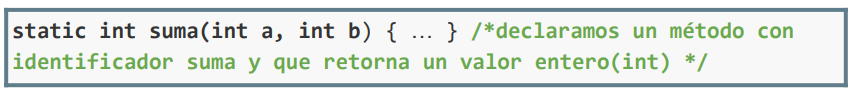

Como ya hemos comentado, el método es el mecanismo de subprogramación que ofrece el lenguaje Java.
Un método se declara definiendo su cabecera y su cuerpo, dentro de una clase:
La cabecera de un método se define en este orden:
- Acceso: modificadores de visibilidad (public) y directiva static.
(*) Por ahora, aunque es opcional, se usará siempre el modificador static para describir el acceso de un método. Los métodos estáticos están asociados a la clase en lugar de una instancia de la clase (objeto). Es decir, que estos métodos definidos como static se pueden invocar directamente sin la necesidad de crear un objeto. En temas posteriores se darán más detalles sobre esto.
En cuanto a la visibilidad (public/private), usaremos siempre public. Cuando no se especifica ningún modificador de acceso, Java utiliza un nivel de acceso predeterminado, a menudo denominado package-private . Esto significa que el miembro sólo es accesible dentro de las clases del mismo paquete.
Es menos restrictivo que private, pero más restrictivo que public.
- Tipo de dato de lo que devuelve. Si no devuelve nada, indicamos void como hasta ahora.
- Nombre (identificador). El nombre de un método y el de sus parámetros siguen las reglas habituales de los identificadores de las variables, constantes, etc.
- Lista de parámetros: tipos y nombres de los datos.

Se pueden declarar métodos sin parámetros. En este caso, se utilizarán paréntesis vacíos después del identificador:
El cuerpo es la secuencia de instrucciones que se ejecutan al invocarlo. Puede incluir cualquier tipo de instrucción o bloque de instrucciones: asignación, condicional, bucle, e incluso, llamadas o invocaciones a otros métodos.
Aquí se muestra un ejemplo de método en Java con su correspondiente invocación:
public static int suma(int a, int b){
int resultado = a + b;
return resultado;
} class Main {
public static void main(String[] args) {
int valor1 = 1;
int valor2 = 2;
int c = suma(valor1,valor2);
}
}Otro ejemplo, para estas características:
public static double areaRectangulo(double base, double altura){
double area = base*altura/2;
return area;
}public class Main {
public static void main(String[] args) {
double base = 4;
double altura = 2;
double area = areaRectangulo(4,2);
System.out.println("El area para un triángulo de base " + base + " y altura " + altura + " es: " + area);
}
}¿Función o procedimiento? Uso de Return
Como ya hemos ido comentando, como resultado de su invocación, un método suele devolver unos resultados, denominados valores de retorno. Pero no tiene por qué ser siempre así. Podría ser que un método solamente se llame para realizar alguna acción sin devolvernos nada (por ejemplo, imprimir una matriz).
El tipo de retorno de un método puede ser cualquier tipo de dato en Java: int, double, char, String, boolean, etc. (También pueden devolver objetos).
En concreto, en caso de haberlo, el valor de retorno debe aparecer después de la palabra reservada return. A este tipo de método se les llama FUNCIONES.
Además, se deben tener en cuenta las siguientes consideraciones:
- Como ya sabemos del tema anterior, la ejecución de un método finaliza tras la ejecución de cualquiera de los posibles return que aparecen en su cuerpo y vuelve al programa principal que ha realizado la invocación.
- Si un método no devuelve ningún valor, entonces el tipo de su resultado es void. En este caso, se ejecuta “return” implícitamente como última instrucción del método, aunque nosotros no lo vemos. A este tipo de métodos se les llama PROCEDIMIENTOS.
//FUNCIÓN
static double areaCuadrado(double lado){
return lado*lado;
}
//FUNCIÓN
static double perimetroCuadrado(double lado){
return lado*4;
}
//PROCEDIMIENTO
static void mostrarMenu(){
System.out.println("Esto es un método que muestra un menú");
System.out.println("1 - Obtener área");
System.out.println("2 - Obtener perímetro");
}public static void main(String[] args) {
Scanner teclado = new Scanner(System.in);
System.out.println("Introduce el valor del lado del cuadrado: ");
double lado = teclado.nextDouble();
mostrarMenu();
int opcion = teclado.nextInt();
if(opcion==1){
double area = areaCuadrado(lado);
System.out.println("El área es: " + area);
} else if (opcion==2) {
double perimetro = perimetroCuadrado(lado);
System.out.println("El perímetro es: " + perimetro);
}else{
System.out.println("No se reconoce la acción.");
}
}